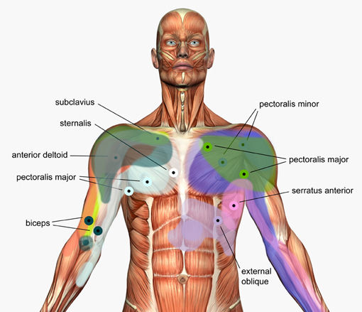
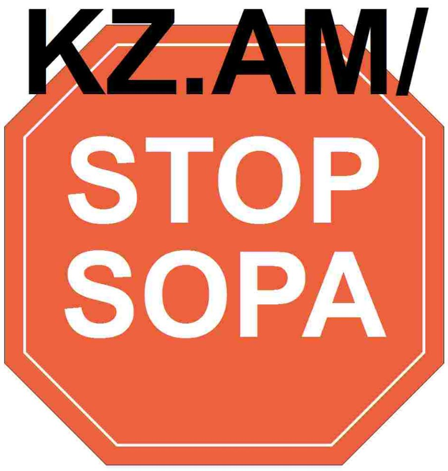

教练及作用
教练
Damien Walters
达米恩•沃尔特斯绰号“变态光头”，来自英国Derby，是一家专业特技馆，达米恩沃尔特斯曾是体操教练和自由亚军。擅长跑酷，他的跑酷视频传到网上，由于动作高难度且潇洒自如，一度被网友疯传，被酷迷尊称为跑酷王子。跑酷王子达米恩•沃尔特斯生于1982年4月6日，原英国体操队成员，最好成绩拿过世界蹦床第四，后来改行玩FREE RUNNING，和跑酷(PARKOUR)还是有些区别的,拍了些视频放到网上被成家班看中并参与了一些动作片的替身工作，他也是成家班里第一个非华裔成员，很多人把他当作企业战士里的主角，其实那个是法国人大卫贝里。大卫、迪米恩和3RUN被认为是现在世界上最顶尖的酷跑高手。达米恩沃尔特斯的跑酷特点是许多动作来自灵感且能应用于实际。而这些动作正是人们所不能想象不敢相信的。下个版本将会介绍更多著名跑酷教练，敬请关注！
作用
跑酷在国内刚起步，大的发展方向和以往其它极限运动发展类似，社会推广手段以比赛和演出为主，跑酷的主要人群都是10几岁或者20多岁的年轻人，很少有人会注重跑酷的基础教学，更多人愿意去展示自己，表达或证明自己。多数人愿意学习单个跑酷动作，学习的过程自然也变得浮躁和急于求成，并且慢慢形成一种普遍的心态，最终定格为现在的中国跑酷氛围。跑酷教学起到了什么作用？越来越多的人知道跑酷，越来越多的人开始练习跑酷，由于练习期间遇到的各种问题无法解决，例如没有正确的热身，没有循序渐进，对自我身体评估不准确，不知道怎么练，哪些能做哪些不能做完全没有概念。这些问题如果没有实际落实好，就极其容易导致受伤或者让刚练习跑酷不久的人散失信心，失去继续练习跑酷的动力。如果这种情况出现的越多，时间往后推，慢慢会在知道跑酷的各社会群体中形成一种跑酷是危险运动的认知。这种认知一旦形成普遍性，跑酷训练人群会迅速减少，之后跑酷会像其他极限运动一样变得非常小众，形成类似街舞，滑板一样充满娱乐元素，被媒体追捧，一时流行，成为潮流，几年之后少有人问津。因此，跑酷教学的最重要的目的，不在于教人多少个跑酷动作，而在于用行动传递给所有人这样的信息：跑酷不是翻栏杆、不是爬墙、不是空翻、而是一项需要系统训练的专业运动。让所有学习跑酷的人可以长期健康，安全练习跑酷，并且一直保持进步。有了这个前提，跑酷人群才能稳定，跑酷理念的传递，团队训练理念的推广才有下文。教学出色，学员稳定，跑酷的根基打好，才有以后的长远发展。跑酷刚开始，我想只要大家愿意，咱们就有能力改变中国整个跑酷文化环境和氛围，让跑酷能长远稳定发展而不是昙花一现，最终也能让自己向往的生活方式得以实现。练习前后注意事项
跑酷有什么需要注意的，正所谓身体是跑酷的本钱，所以除了锻炼好身体以外，跑酷前热身，日常生活的饮食及受伤后的处理等对于热爱跑酷的你也相当重要，我从各种书籍中找到一些有用的方法和建议，希望能够对你有所帮助。
1. 热身
练习前的热是避免受伤，提高练习质量的重要一环。
预热：
千万不要一上来就拉伸肌肉，而要先做一些简单的动作来预热，如跑跑跳跳。关节是最易受伤的部位，一定要认真活动，特别是肩关节，腕关节，髋关节。
事前拉伸：
拉伸小腿，大腿，臀部，肩部，背部，颈部胸部，臂部的肌肉和韧带。注意正确的姿势，如果感到痛，说明姿势不正确，需要调整。胸，颈，头一定要保持一条直线，避免驼背姿势。均匀呼吸，不要憋气。各种拉伸姿势保持20-30秒。
调整：
完成训练后不要立即停止下来，而要做一些动作，慢慢调整一下。
事后拉伸：
训练后的拉伸与训练前一样重要，它能巩固拉伸效果。
2. 锻炼
没有针对某个动作的特别准备性锻炼呢?这是一个很难回答的问题，这取决于你想做哪一个动作。绝大多数的动作都是在运动中完成，练习一个固定动作是不能完成整个动作的。所以，学习和提高一个动作的办法只能是完整的练习，这也是危险的地方，因为它容易使人受伤。但是，通过一般性的锻炼方法：
(1) 通过各种机械等锻炼腕部，臂部，肩部力量。
(2) 当力量足够支撑身体时，要注意两只手臂均衡练习。
(3) 通过俯卧撑，倒立俯卧撑等来提高上支力量。
(4) 通过躺卧起坐，鲤鱼打挺，引体向上等来联系腰部力量。
(5) 通过蛙跳，纵身上跳等练习下肢弹跳力。
(6) 通过握拳，抓硬物练习手指握力。
(7) 另外可以适当练习长跑，跳绳增加肺活量。
3. 急救
记住：受伤后的补救如果延迟一分钟，就会增多一天的痛苦。
降温永远是处理伤情的第一步，最好使用冰袋来回在受伤部位冷敷，如果没有冰袋，使用冷水冲也可以。
如果受伤部位产生疼痛，而且疼痛在伤处降温的时候加重，不降温的时候轻，就证明发炎了。如果疼痛不太剧烈，你仍然可以继续冷敷。接下来你需要上药，药膏或喷雾剂都可以，比较好的急救药有“好得快”，云南白药气雾剂等。这些药剂通常有镇痛作用，千万不要因此认为疼痛已经结束或减轻而带伤继续训练。带伤训练可能引起慢性炎症，从而导致骨折，所以一定要小心才是。当受伤部位在正常情况下不再疼痛了，说明伤处已经痊愈，你就可以继续训练了。
肌腱拉伤往往突然发生，并以剧烈疼痛。急救措施与发炎相同，注意不要对伤处进行按摩，否则辉造成进一步损伤。3至4天以后，对伤处热敷，而且可以使用药膏轻微按摩。治疗挫伤比较简单，只要热敷上药，防止伤口感染就行了。挫伤不影响训练。
4. 常见损伤
损伤的的发生：
大部分损伤产生于刚刚开始练习新动作的过程中，因为这是你不太清楚要做什么，或者身体还没有适应。在技术尚未掌握好的情况下，你需要花更多的力气，但又不能用力过猛。
另外，每个动作都需要靠不同部位的肌肉，所以，如果你某部位的肌肉力量不足，当做一个需要该部位就肌肉用力的动作时，你的身体就会承受不了，这就是你经常受伤的原因。
任何动作只要运用正确的技术和方法去做，就不会很危险，因为你知道如何去做，应该注意哪里，而且有足够的力量完成它。如果在这种情况下受伤，那就是你没有充分热身。
会受哪些伤：
中短期的损伤通常需要几天到几周时间痊愈，最常见的有肿痛，灼热等。关节很脆弱，在练习的过程中，腕，肩，膝，髋，踝，肘关节都需要注意，以免受伤，脱臼或骨折。手指，脚趾容易骨折。受伤后一定要治疗，注意休养，否则会导致长期难以痊愈的病痛。
5. 营养
饮水：
水占人体重量的60%以上，它对于人体来说非常重要。训练过程中一定要保证充足的饮水，因为出汗会导致水分和矿物质的流失，所以最好喝矿泉水和运动饮料来补充。切记不要喝可乐。柠檬水和茶，因为他们会导致更严重的盐分流失。最好不要喝冰凉的水，它会在胃里停留更长时间，影响吸收。
在你感到口渴之前喝水，口渴感表明你的身体已经缺水了。注意不能忍耐口渴感，否则你会脱水，导致严重后果。长期缺水会导致尿液减少，体内毒素沉积，损伤肾脏。
食物：
注意以下几点，对你的体体质很有好处：
(1)进餐后一个小时才能练习。
(2)多喝牛奶，多吃水果，蔬菜，谷类食品，增加钙质吸收。
(3)牛奶和奶制品也可以增加镁元素。
(4)肉，菌类，大豆，可可等可以增加钾元素。
(5)肝脏，小麦，肉，豆制品可以增加铁元素。
作者信息
版权所有者：Ray Lee
公司：Goodboy, Com.
个人网址：Email： leegf17@hotmail.com
QQ：1738009713
版本号：1.1.20140520
®Goodboy ©Ray Lee
目 录
- 跑酷的来源
- 跑酷的定义
- 1-8周体能训练计划
- 跑酷电影及书籍
- 教练及作用
- 练习前后注意事项
- 作者信息
跑酷的来源
“跑酷”最初由法国消防员发起，2002年在英国开始盛行，后来大卫。贝利(DavidBelle)把它发扬光大。法国电影[Banlieue 13](暴力街区)即是展示PARKOUR街头文化，主角DAVID BELLE是LE PARKOUR运动的创始人之一。 在Parkour的世界里, 练习者称谓“Traceur”。Parkour 的动作是结合了所有自由的动作, 提升创意，并且鼓励人们去找到属于自己的信仰。在Parkour的领域里，不少Traceur极力想表现flips、spin这些未收录的的动作, 这也表达出了Parkour并不局限于某些固定的动作，甚至你也能够把自己的“独门武功”加到Parkour里面。Parkour的动作追求的是出其不意的效果，往往超出了常人的想象。跑酷的定义
跑酷是什么？跑酷即为Parkour。Parkour运动把整个城市当作一个大训练场，一切围墙、屋顶都成为可以攀爬、穿越的对象，特别是废弃的房屋。Parkour诞生于80年代的法国，“Parkour”一词来自法文的“parcour”，有“超越障碍训练场”的意思。
跑酷是一项街头疾走极限运动，有点Free-running的意思，再配合猿猴一样的灵活攀越。不过这项运动的热衷者倒更愿意把它看成是一种青年亚文化所倡导生活方式。它帮助你只用本身的力量穿越任何障碍物，或到达一个目的地。跑酷不仅是门运动的艺术，也是一种生活方式，跑跳攀爬中的自由灵魂在运动中无限伸展，这的确是一门艺术。
跑酷看上去有些像中国功夫中的轻功，当traceur们在城市里飞奔的时候，看上去确实像是轻功在身。在电影《怪人二十面相传》里，我们可以看到一个很轻松的动作：拿一支笔，在城市的地图随意上画一根直线，然后开始：跑！这部电影里的跑酷镜头虽然艺术化了，但确实让人赏心悦目。
近期跑酷似乎大流行，另一部有跑酷内容的电影是《杀人锦标赛》，其中那位法国杀手的跑酷可以称得上精彩刺激，让人过目难忘。
跑酷是人类根深蒂固的本能反应，这种本能就是运动，是一种需要真正勇士精神的运动。归根结底，跑酷是训练人体快速移动能力的一种自然的方式，它将我们周围任何可以利用的环境设施“为我所用”，这种“移动的艺术”既不需要特别的设备，也不需要专门训练。
 人体是从事这项运动的唯一的工具，对所有人来说，这就是运动的规则，因为它结合了所有人体的自然能力，比如跑、跳、攀爬等。这是一项能够开发你潜在运动能力的一项体育活动。
无论你在城市，还是在乡村，这项运动要求你都要面对出现在你面前的障碍物，并“挑战它”。这就需要结合灵活性和控制性。运动装备很简单，一件T恤衫，一双轻便的跑步鞋以及一条运动裤。运动的时候，身体就像在驾驶舱的感觉一样，你会突然发现你能控制自己瞬间腾空的身体。
跑、跳、攀爬、翻滚以及其他一些方法都可以利用，它不仅吸引你，也吸引周围的人。所有这一切的目的就是，决不被障碍物所阻碍，无论它是墙、铁窗、栅栏、树木、岩石、交通工具、壕沟等。
1-8周体能训练计划(力量耐力)
跑酷很酷，但并不遥远。通过科学系统的训练，每个人，无论你是什么年龄、什么职业、什么性别，都可以练习跑酷，并通过跑酷达到强身健体的目的，同时获得一副好身手。最重要的是坚持。持之以恒的练习跑酷，3年、5年、7年，总有一天你会成为跑酷高手。| 顺序 | 项目 | 具体内容 |
|---|---|---|
| 1 | 技术动作 | 定点、猫挂、下墙、下台、侧跃、懒人跳、猴跳等 |
| 2 | 心肺耐力 | 30分钟慢跑 |
| 3 | 肌耐力 | 基础耐力合格，为力量提高做准备 |
1-8周训练内容：
1．心肺耐力：30分钟慢跑2．肌耐力：54-90分钟
| 顺序 | 项目 | 具体时间 |
|---|---|---|
| 1 | 每组练习时间 | 3-5分钟 |
| 2 | 练习时间 | 27-45分钟 |
| 3 | 组间休息时间 | 3-5分钟 |
| 4 | 总休息休息时间 | 27-45分钟 |
| 顺序 | 项目 | 每组次数 | 组数 | 描述 |
|---|---|---|---|---|
| 1 | 猫爬+平地金刚+侧猴子 | 每个动作15-20个 | 一共3组 | 猫爬保持后背一条直线，臀部收紧不能左右晃动|金刚膝盖贴紧胸部|侧猴子重心保持在手和脚中间，远端腿伸直 |
| 2 | 挂墙走+小俯卧撑+大俯卧撑+V字撑肩外展 | 每个动作10-15个 | 一共3组 | 大小俯卧撑都要确保上肢贴紧躯干|V字撑肩外展动作脚尽量离手距离近一些 |
| 3 | 单腿深蹲+单腿剪蹲+脚尖跳 | 前两个动作10-15个，脚尖跳300次 | 一共3组 | 单腿深/剪蹲动作膝盖不超过脚尖保持身体不晃动，肌肉收缩阶段由挺胯带动伸腿，而不是先伸膝盖。（难度加大方法：保持动作标准，背冲台阶，身体稍微后仰并保持一条直线，反向单腿深蹲或者剪蹲上台阶，相当累！） |
3．技术动作： 总时间100分钟
| 顺序 | 项目 | 练习时间 |
|---|---|---|
| 1 | 定点+猫挂+下墙+猴跳 | 30分钟 |
| 2 | 下台+侧跃+懒人跳 | 30分钟 |
| 3 | 休息时间 | 40分钟 |
第9~24周的训练教程将在下一个版本中介绍，敬请期待！
跑酷电影及书籍
| 序号 | 种类 | 例如 | 描述 |
|---|---|---|---|
| 1 | 电影 | 《曼谷奔逃》、《企业战士》、《暴力街区》等 | 以欧洲为主。 |
| 2 | 书籍 | 《北京跑酷》 | 本书将北京都市空间纵向均衡切分成西、东、中三大块，遴选出18个区域进行观察，分析区域空间演变的内在逻辑，揭示北京都市空间的独有魅力。 |
| 《自由跑酷》 | 本书适用于即将练习跑酷和练习跑酷时间不长的新手，对于练习跑酷时间很长的朋友可以做为参考。 | ||
| 3 | 装备 | 衣服 | 本书将北京都市空间纵向均衡切分成西、东、中三大块，遴选出18个区域进行观察，分析区域空间演变的内在逻辑，揭示北京都市空间的独有魅力。 |
| 鞋 | 本书适用于即将练习跑酷和练习跑酷时间不长的新手，对于练习跑酷时间很长的朋友可以做为参考。 | ||
| 4 | 游戏 | 《墨人跑酷》 | 用中国的水墨制作的跑酷小游戏，帮助主人公安全到达目的地即可进入下一关。 |
| 《高山极限酷跑》 | 操作方法：游戏中使用方向键操作。 | ||
| 《神话跑酷》 | 这是一个神话般的男人，他总是做出别人难以理解的事情，所以人们总会管他叫做神话。 | ||
| 《卡哇伊跑酷》 | 游戏的目的就是要令小人跳过或者避开前方的障碍物或者敌人，表现高超的跑酷技术，有时障碍物会与周围的环境融为一体，务必留神。 | ||
| 《蜘蛛侠跑酷》 | 蜘蛛侠在肚子很饿的时候遇到了一群僵尸，打不过，只有逃跑了。帮助蜘蛛侠逃跑吧，让他看到第二天的太阳吧！ | ||
| 《极限跑酷》 | 使用跑酷技术突破所有障碍成功收集所有的道具吧！ | ||
| 《机器人酷跑》 | 想要享受飞檐走壁的快感除玩蜘蛛人以外，也可试试这款，机器人脚上穿的是三百六十度重力鞋，可以在地面或是天花板行走，小心不要掉到画面外。 |